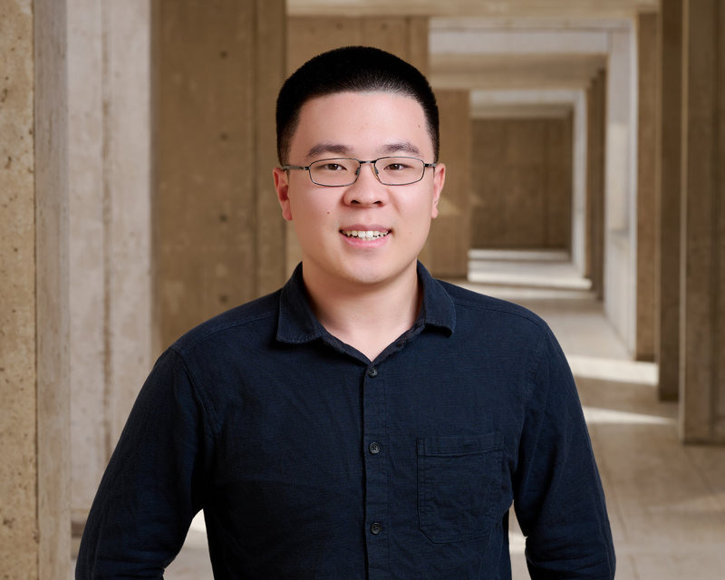

Boyu (Barry) Liu
Researcher at Kosuri Lab, Salk Institute, specializing in single-molecule biophysics and DNA nanotechnology.
About Me
I earned a B.S. degree in Molecular and Cell Biology from University of California, San Diego in 2024. Since then, I have been working as a Research Assistant at Kosuri Lab, Salk Institute for Biological Studies.
My research sits at the intersection of single-molecule biophysics and nucleic acid nanotechnology. My experimental work leverages dynamic DNA origami platforms, single-molecule TIRF microscopy, and custom assays to investigate enzyme kinetics, CRISPR-Cas9 mechanics, and DNA bending dynamics.
Currently, I lead a project focused on tracking RNA polymerase transcription as a novel single-molecule sequencing methodology, registering observed angular motion with nucleotide positions on template DNA.
Research Projects
Single-Molecule RNA Polymerase Transcription Tracking
Leading research into real-time tracking of RNA polymerase transcription as a potential high-resolution sequencing methodology. Focused on registering observed single-molecule angular motion with exact nucleotide positions on template DNA.
- Optimized purification of E. coli RNA Polymerase transcription elongation complexes 3-fold using streptavidin magnetic beads.
- Applied pause-site and U-tract motif registration to align single-molecule ORBIT trajectories for sequence-resolved transcription.
RNA Polymerase
Single-Molecule TIRF
Sequencing
Biophysics
DNAntenna & Dynamic DNA Origami Nanotechnology
Developed modular DNA origami platforms to make dynamic physical properties and enzymatic interactions of dsDNA directly visible under high-speed microscopy.
- Observed target-specific Cas9-mediated cleavage and measured intrinsic physical bending dynamics of dsDNA constructs.
- Executed high-speed imaging and OxDNA coarse-grained molecular simulations to model Brownian motion.
- Designed assays to measure single-strand overhang ligation efficiency for complex DNA origami assembly.
DNA Origami
Cas9 / CRISPR
OxDNA / Scadnano
TIRF Microscopy
Why Science
Outside the laboratory, I'm an avid cyclist and car enthusiast spending most of my personal time on frame and wheel, aluminum and steel. It is perhaps striking that riding and driving isn’t the most rewarding part to me, instead, I find the acts of working on them the most enjoyable. Tearing them down allows me to dissect the function of individual parts, assess their function, and gain an overall understanding of how they work. Putting them together allows me to make them just a little bit better.
All the while, I have grown to appreciate the countless people who have iterated and optimized every aspect of these wonderful machineries, as we, their offspring, get to enjoy life because of their contributions. I want to be a part of that kind of contribution, leaving my footprints alongside those people who came before me. This is also the attitude of which I treat science.